Reincarnation CYOA here
Congratulations, you did it, you won the death lottery! Rather then having a body and a world
assigned to you and having your memories wiped like most people who die you get to chose where and
what you reincarnate as, isn't it exciting?
What you've never heard of this? Well it is a very low chance after all, and totaly not a way
for me to cover up the fact I ran you over at 3am while on a drunken bende on earth, and now have to
do this for you or get fired. Trust me, it's not easy to find a job as an angel nowadays so I need
to keep what I have.
Anyway, try not to think about it too much and fill the forn in. Let me know when you're done
and I'll send you off on your new life! Oh and one more thing, you have to reincarnate as a girl,
as for why...Dont ask me, I don't make the rules.
Equipment - pick one
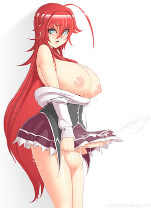
Body type - pick one
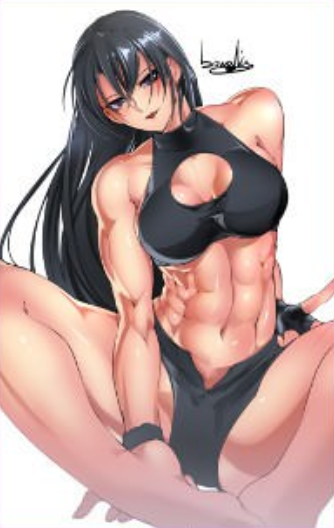
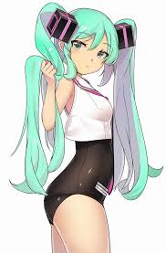
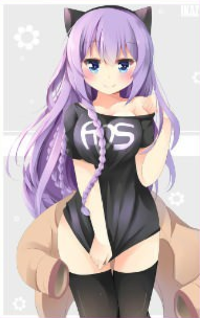
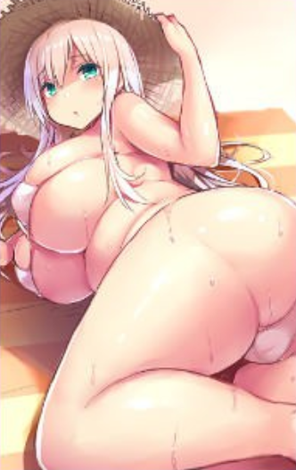
Breasts - pick one
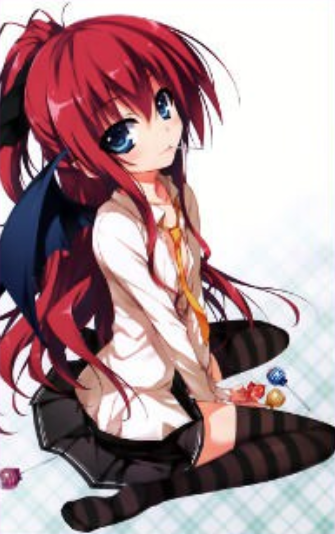
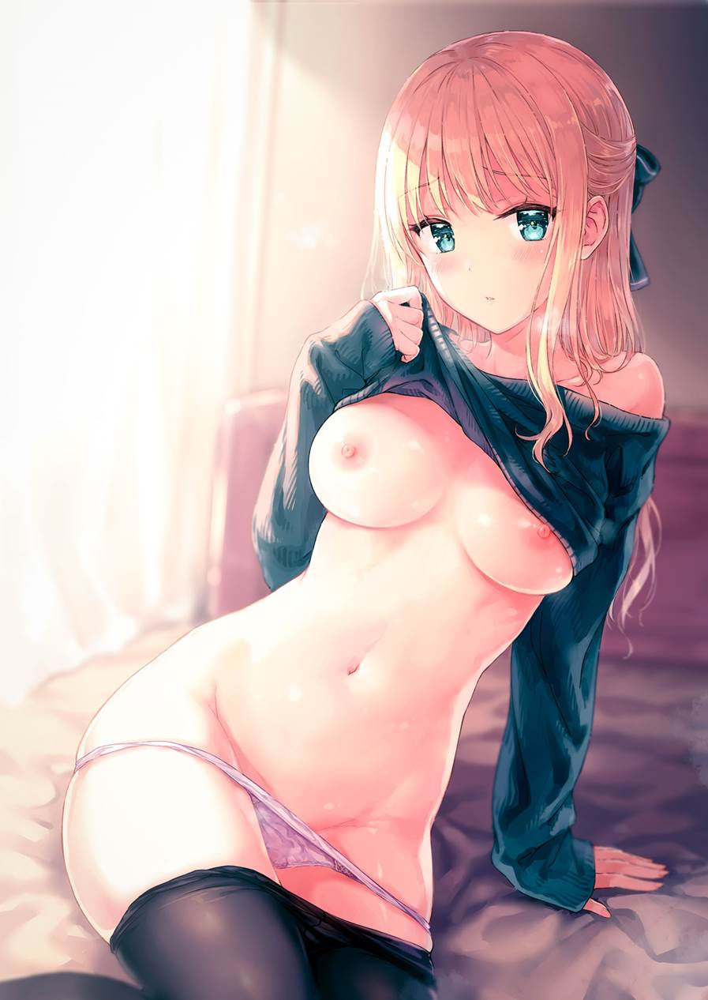
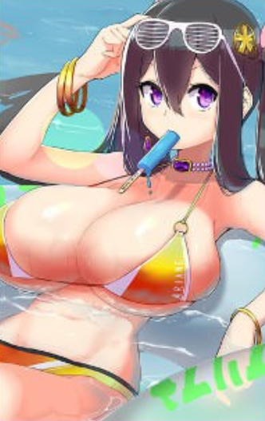
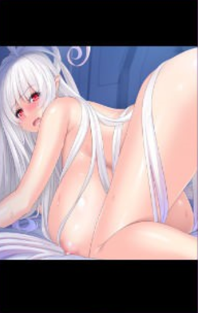
Height - pick one
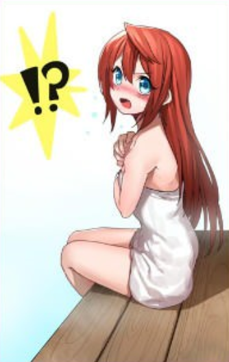
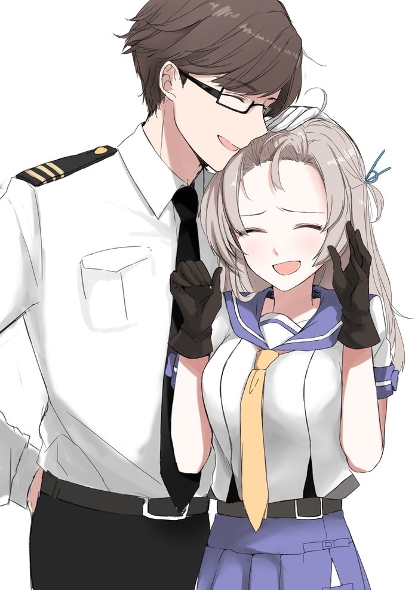
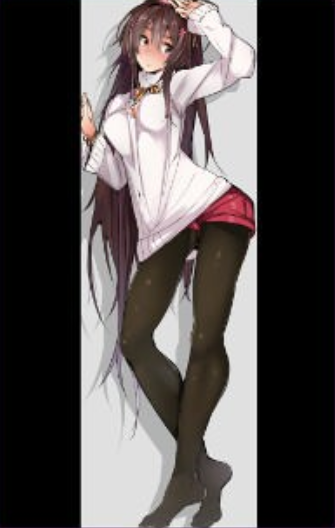
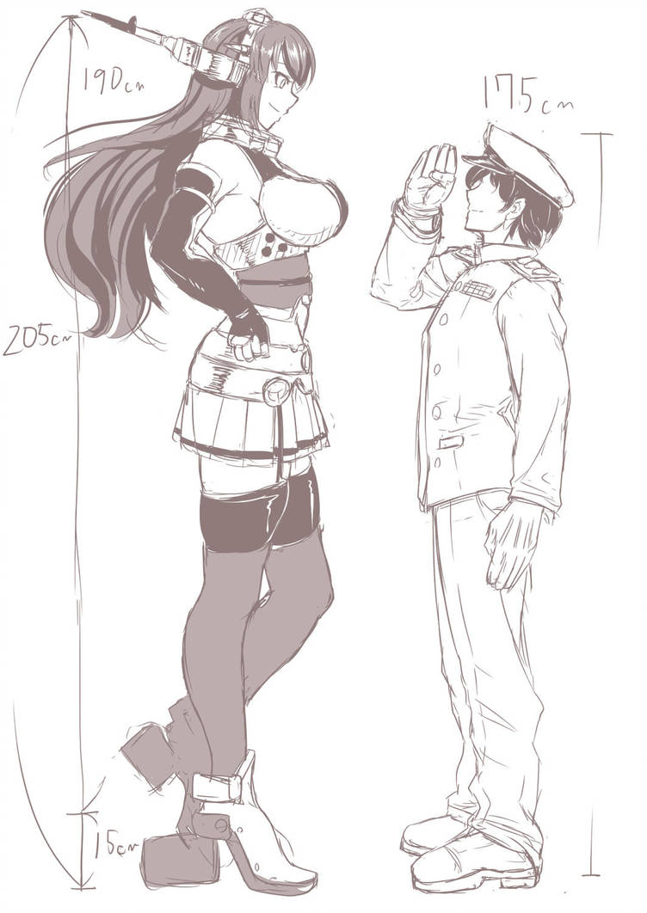
Species
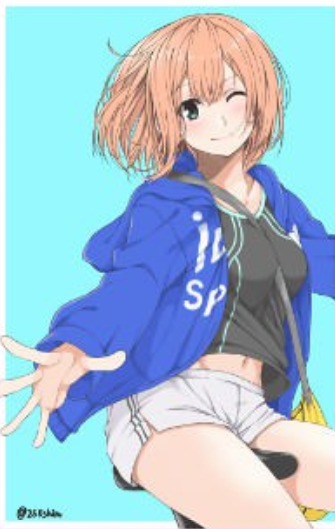
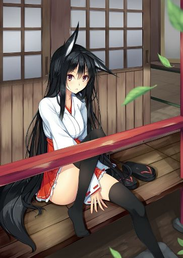
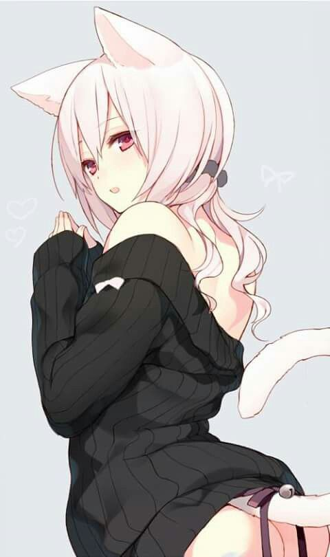
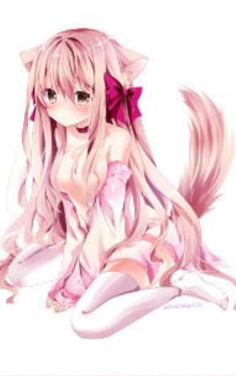
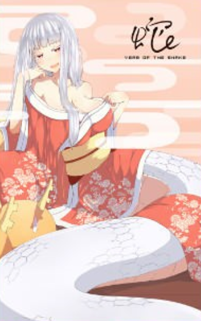
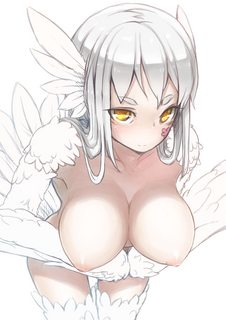
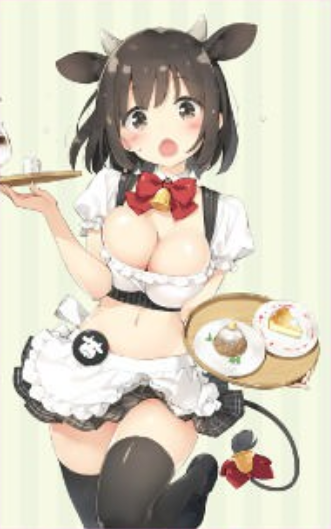
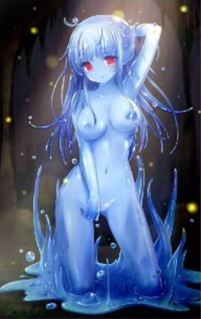
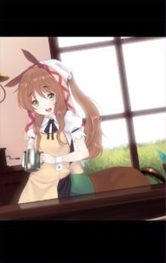
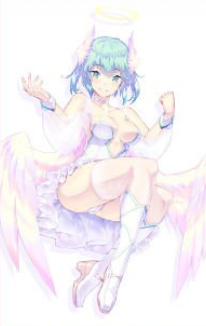
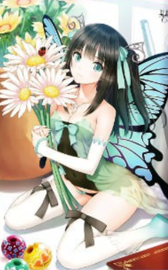
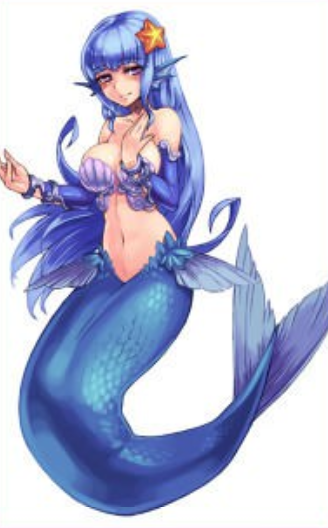
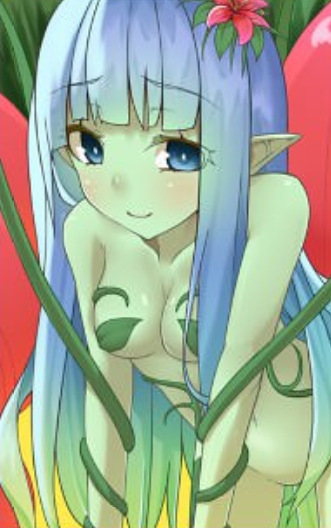
Reception
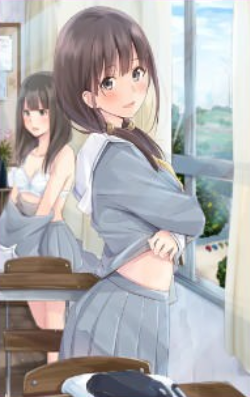
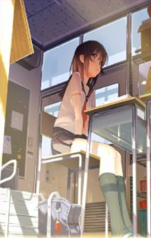
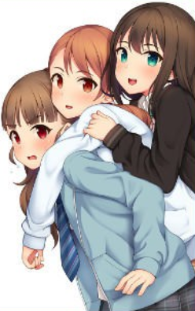
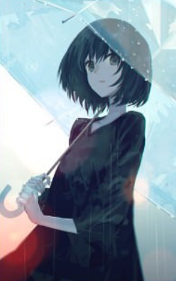
Boons and banes
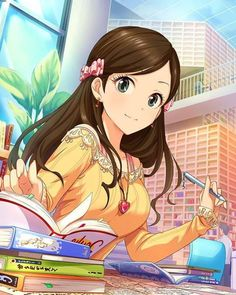
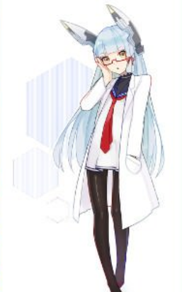
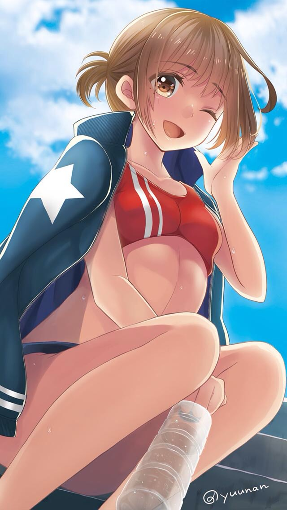
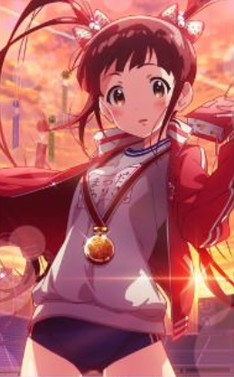
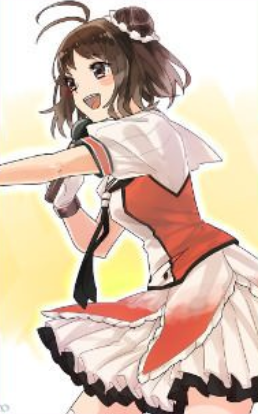
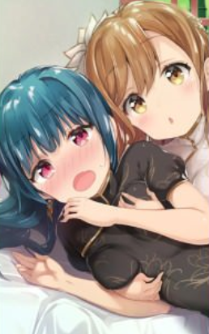
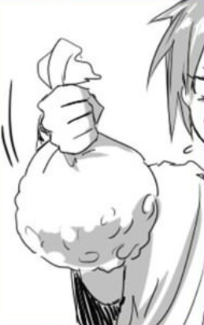
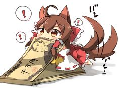
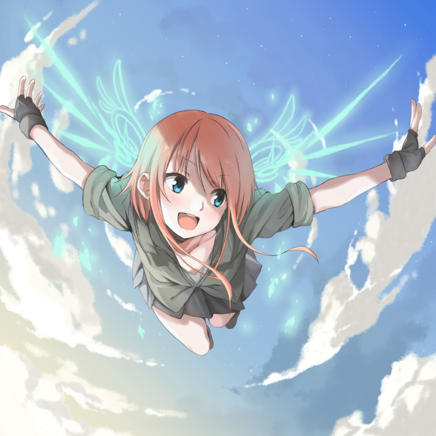
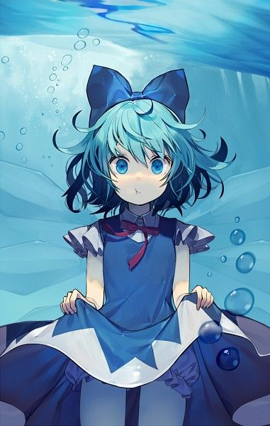
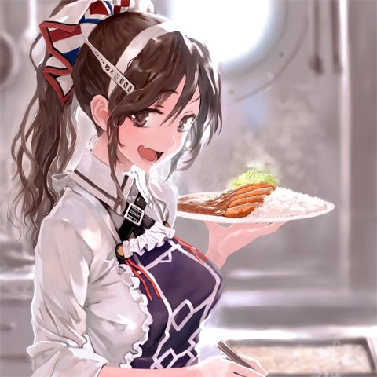
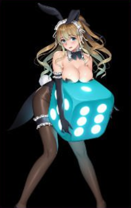
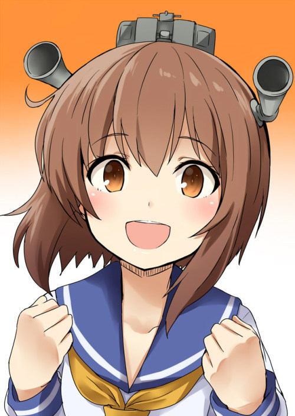
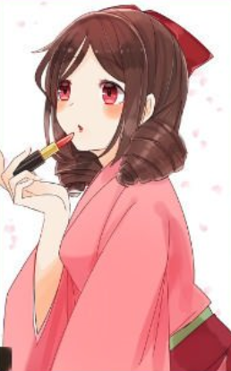
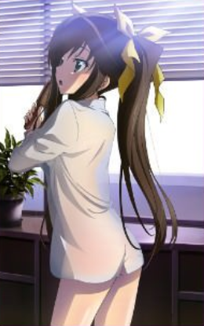
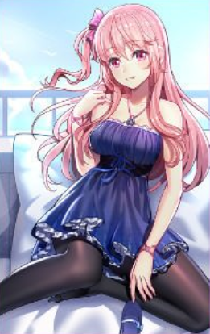
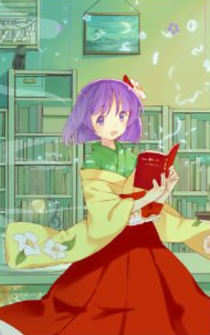
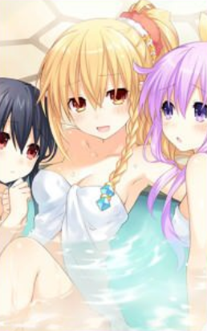
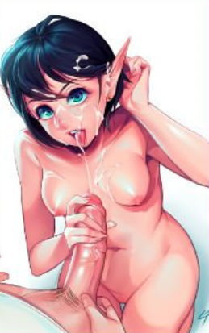
Banes
Location
What did i pick?
All characters are 18+